Hirao
Hirao · Yamaguchi
Hirao
Highlighted on the Yamaguchi map.
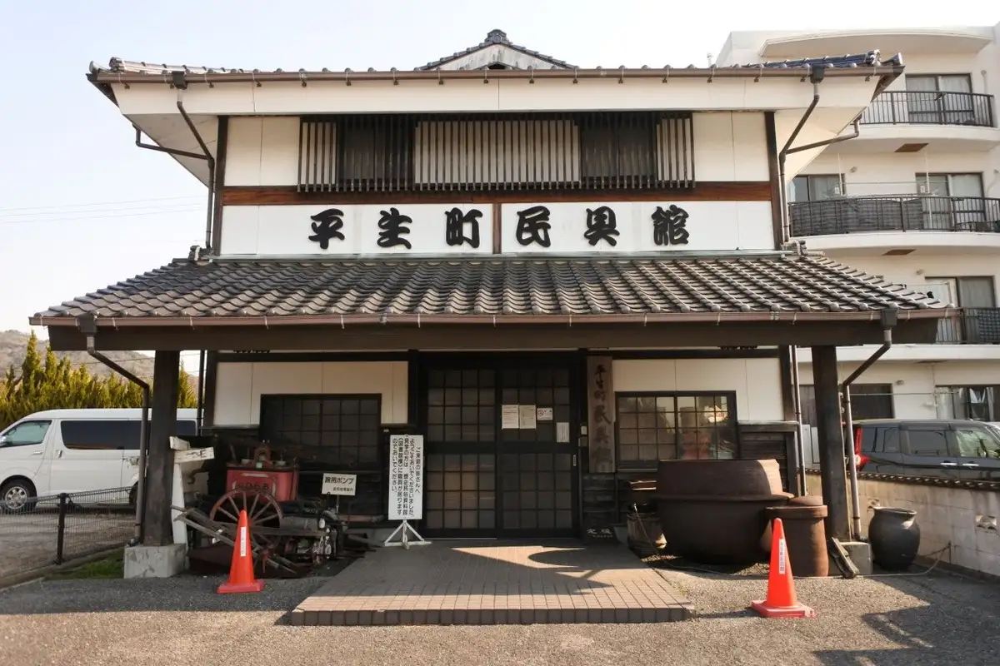
Dining
うどんの釜屋 平生店
Udonno Kamaya Heizei Mise
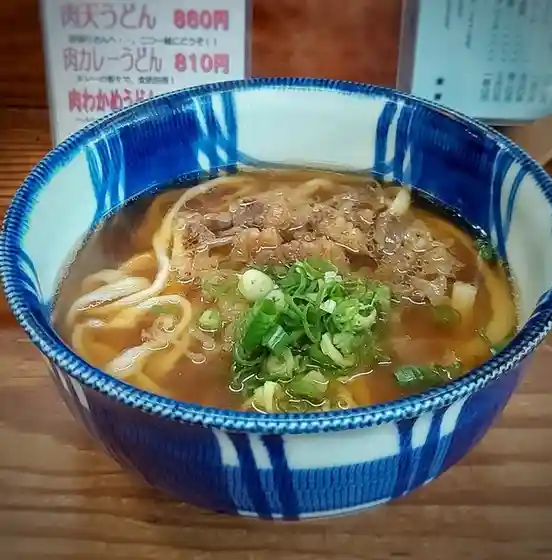
麺鮮醤油房 周月 山口平生店
Men Sen Shouyu Bou Shuu Gatsu Yamaguchi Heizei Mise
ブーランジェリー miki
Buuranjierii Miki
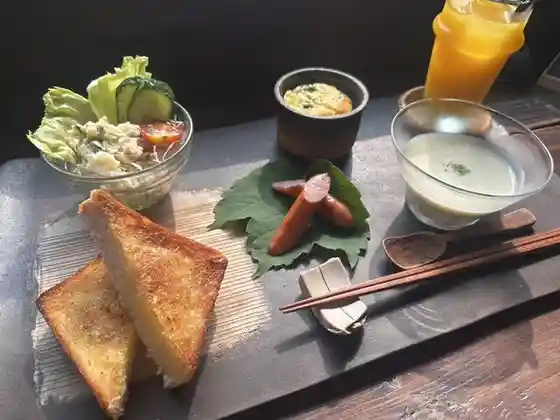
8cafe
8cafe
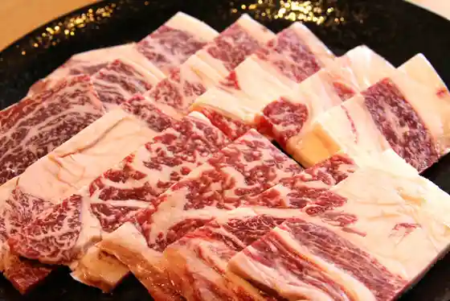
焼肉・ホルモン 冨まる 平生店
焼肉・ホルモン 冨まる 平生店
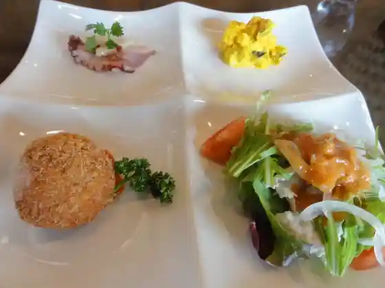
オーベルジュ
Ooberuju
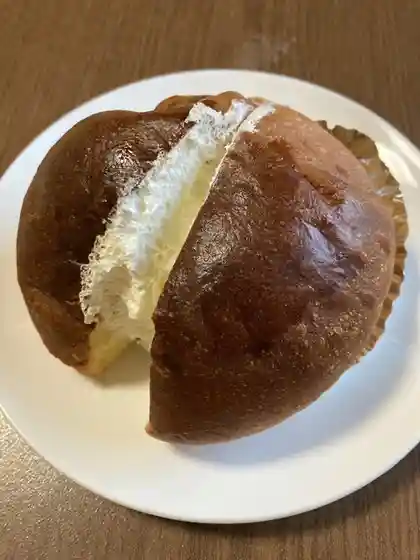
久保製パン所
Kubo Seipan Tokoro
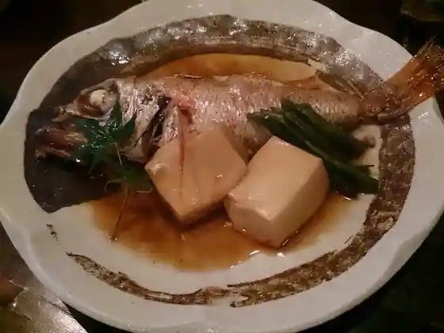
居酒屋 EN
Izakaya En
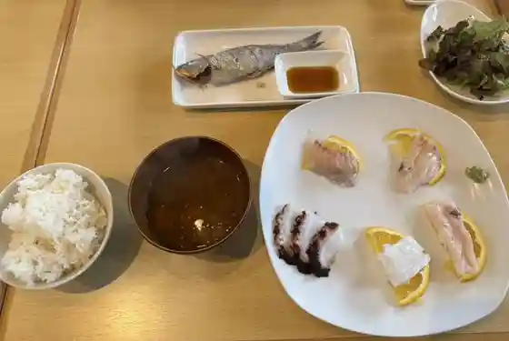
Imagine West Ocean
Imagine West Ocean
お好み焼美里
O Konomi Yaki Misato
cafe bower
cafe bower
すし日和 平生店
Sushi Hiyori Heizei Mise
一福来
Ichi Fukurai
丸山海浜パーク 売店
Maruyama Kaihin Paaku Baiten
La paix
La paix
一膳
Ichi Zen
さんさん食堂 平生店
Sansan Shokudo Heizei Mise
ミーカフェ
Miikafe
ピザ アオゾラ
Piza Aozora
ジョイフル 山口平生店
Joifuru Yamaguchi Heizei Mise
めん六や 山口平生店
Men Roku Ya Yamaguchi Heizei Mise
カラオケ喫茶 華
Karaoke Kissa Hana
果子乃季 平生店
Kashi No Ki Heizei Mise
菓舗よこみち 平生店
Ka Ho Yokomichi Heizei Mise
ほっともっと 山口平生町店
Hottomotto Yamaguchi Heizei Machi Mise
㐂むらら
Ki Murara
宝珠
Houshu
民宿 夫婦松
Minshuku Fuufu Matsu
ホテルニューひらお
Hoterunyuu Hirao
カラオケ喫茶 艶歌路
Karaoke Kissa Enka Michi
カラオケ喫茶レモン
Karaoke Kissa Remon
いこい旅館
Ikoi Ryokan
カラオケ太陽
Karaoke Taiyou
マックスバリュ 平生東店
Makkusubaryu Heizei Higashi Mise
cafe&bar rocco
cafe&bar rocco
アルク 平生店
Aruku Heizei Mise
Joyfull
Joyfull
Kamaya Hirao
Kamaya Hirao
Oshokujidokoro Furusato No Hikari Haradaya
Oshokujidokoro Furusato No Hikari Haradaya
Fukujuen
Fukujuen
Tomimaru Hirao
Tomimaru Hirao
Kirara
Kirara
Shobu
Shobu
Reagan
Reagan
Pizza Aozora
Pizza Aozora
Fujita Restaurant
Fujita Restaurant
Coffee Yaro
Coffee Yaro
Ippuku
Ippuku
Hiromi Shokudo
Hiromi Shokudo
Cafe Room Kazu
Cafe Room Kazu
Takechan
Takechan
Restaurant Mt Ouza
Restaurant Mt Ouza
Lemon
Lemon
Ryukeikaku
Ryukeikaku
Roman
Roman
Sanuki Udon Kamahachi Hirao
Sanuki Udon Kamahachi Hirao
Tatsunoya
Tatsunoya
Auberge
Auberge
Teru Chan
Teru Chan
Tomo
Tomo
Montreux Hirao
Montreux Hirao
Shato Rest House
Shato Rest House
Stay
ホテルニューひらお
Hoterunyuu Hirao
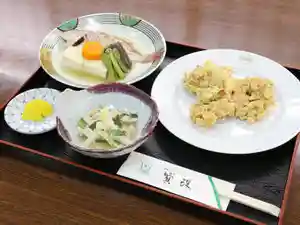
空海の宿 平生
Kuukai No Yado Heizei
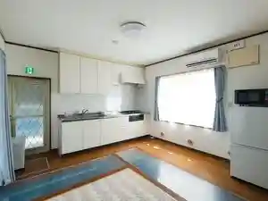
Sights
Ohoshi Yama
Ata Ta Oriibu Park
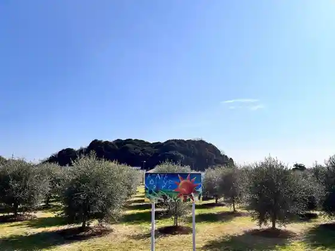
Shio Katsu HARBOR
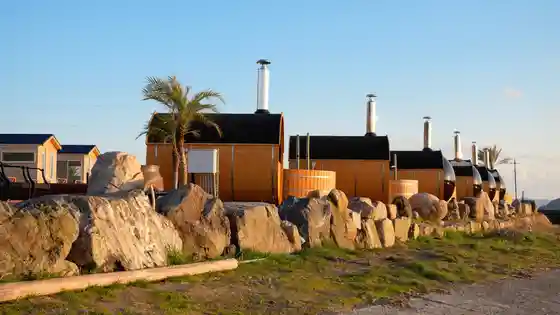
Hannya Tera
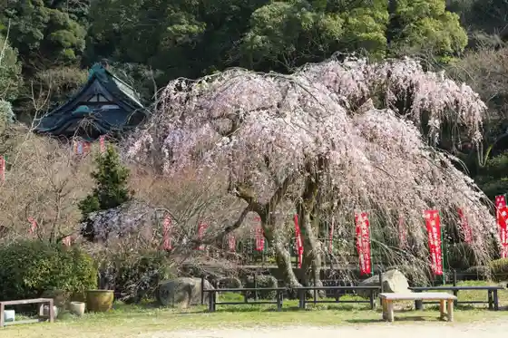
Daidokkuoshankayakkusu
Minami Suo Bridge
Hakutori Inari Shrine
Sago Shima
Ata Ta Koryu Kan
Shingo Tera
Ono Mori Ie Hakasho (Shu Gan Tera)
Itaria no Hirao Oriibu Forest
Hirao Folk History Museum
Kami Hanayama Burial Mound
Hirao Tokusanhin Center
Kudara Bu Shrine
Sone Kamimai
Hakucho Burial Mound with Accompanying Mounds and Moat
Maruyama Kaihin Park
Hato Land Hirao Supotsurekurieshon Park
Shirai Sho Suke Kensho Hi
Ono Kamimai
Manyo no Kahi
Hirao Mingu Kan
Dote Town Namban Hi
Akago Yama
Shinshutsu Kofun Gun
Iwata Iseki
Kumakawa Kahan Sakura Namiki
Horikawa Namban Hi
Ono Mori Ie Hakasho (Umi Mae Jiseki)
Tana Kamimai
Hirao Town Hall